Name and epithets
The name Aeneas may carry a pun on the Greek word for “dread” (ainos). In a Homeric Hymn to Aphrodite, the goddess explains: “His name shall be Aeneas, because I felt awful grief in that I laid me in the bed of mortal man” (Shelmerdine, Homeric Hymns 135).
The name Aeneas in Greek is Αἰνείας, which is three long syllables (– – –). A word of that shape can only be fit in certain places in the dactylic hexameter of the Iliad line like within a spondee followed by a dactyl, therefore limiting where Aeneas's name can be mentioned. In the Iliad, Homer goes around this by giving Aeneas epithets that point to his family and rank that conveniently fit its meter:
- Son of Anchises: “Αἰνείας τʼ Ἀγχισιάδης καὶ φαίδιμος Ἕκτωρ” (Homer, Iliad 17.754)
- Leader of the Trojans: “τὸν δʼ αὖτʼ Αἰνείας Τρώων ἀγὸς ἀντίον ηὔδα” (Homer, Iliad 5.217)
The more well known epithet “pious” belongs to Virgil's Aeneid. Aeneas even uses it of himself: “I am Aeneas, duty bound [pious]" (Aeneid 1.457). "Pietas" means doing the duty to the gods, family, and country, and is one of the core Roman virtues that is emphasized in the Aeneid.
Appearance and personality
Appearance
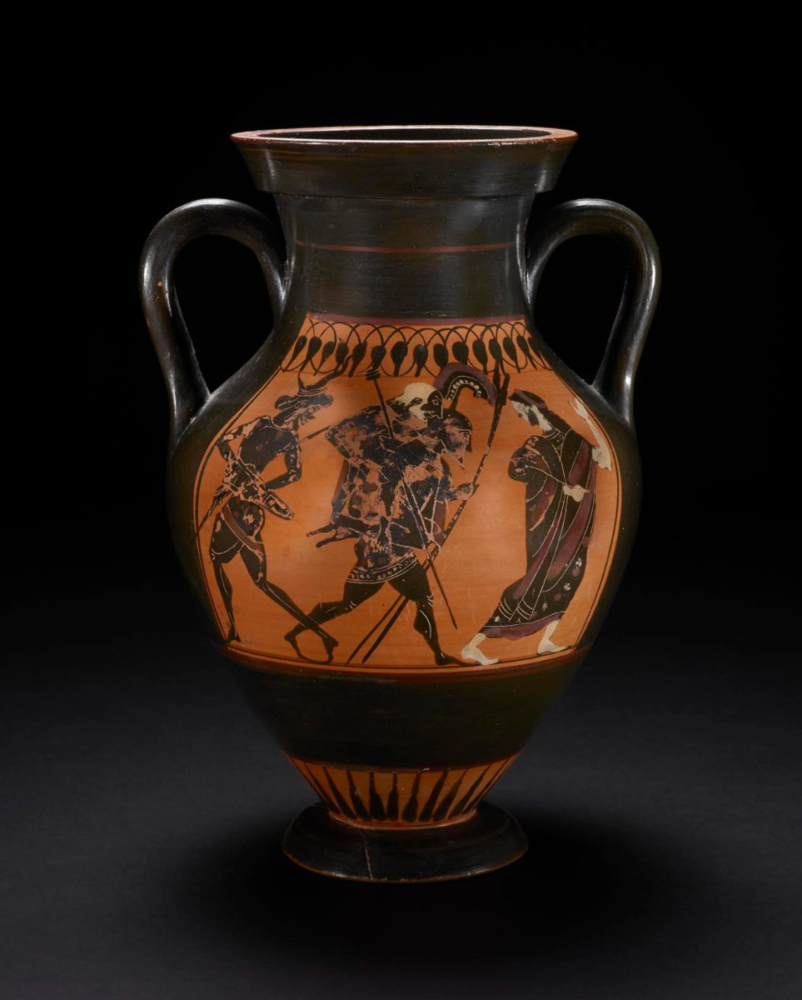
Aeneas’s specific appearance is not discussed at length in either the Iliad or Aeneid. Most paintings depict him as carrying Anchises on his back, as Aeneas famously carries his father while escaping from Troy. However, there are bits of description of Aeneas’s arms and armor in the Iliad.
- Aeneas is given “blazing armor” from Apollo’s blessings, “who strode to the front corseleted in light” (Homer, Iliad 20.120, 116)
- Before dueling Achilles in Book 20, Aeneas’ is described briefly: “With every threatening step, war shield / Curved around his chest, bronze spear poised” (Homer, Iliad 20.167–168)
- Aeneas wields an ash-wood spear (Homer, Iliad 20.276)
- During their duel, Achille’s spear takes “two circles of the shield with it” upon impact, meaning it must be composed of multiple layers (Homer, Iliad 20.283–284)
Later in the 5th or 6th century CE, Dares writes that “Aeneas was auburn-haired, stocky, eloquent, courteous, prudent, pious, and charming. His eyes were black and twinkling” (Dares, History of the Fall of Troy §12). This seems to be one of the only literary sources that describes Aeneas’ specific physical features like hair and eye color.
Biography
Birth
Aeneas was born to the goddess Aphrodite (Venus) and Anchises, a member of the royal family of Troy. The earliest sources place his birth on Mount Ida, near Troy:
“Cytherea with the fair diadem bore Aeneas in union of intimate desire with the hero Anchises among the peaks and glens of windy Ida.” (Hesiod, Theogony pg.80)
“The Dardanian troops were led by Aeneas, / Whom bright Aphrodite bore to Anchises, / A goddess lying with a mortal man / In the foothills of Ida.” (Homer, Iliad 2.937–940)
The Homeric Hymn to Aphrodite (7th-6th century BCE) tells how Aphrodite and Anchises met. Zeus made Aphrodite fall in love with the Trojan prince as an act of retaliation and humiliation (Homeric Hymn to Aphrodite 45–52). Aphrodite frequently boasted that she made other gods fall in love with mortals, so Zeus gave her the same desire in return:
“But even in the heart heart of Aphrodite herself Zeus cast sweet longing / to make love with a mortal man, so that soon / not even she would be kept from the bed of a mortal” (Homeric Hymn to Aphrodite 45–48)
To prevent Anchises from being afraid, Aphrodite disguises herself as a Phrygian princess and approached the Trojan prince on Mount Ida, where he was tending cattle (Homeric Hymn to Aphrodite 53–55, 81–83, 111–112). After their union, Aphrodite reveals her true identity and is ashamed. The gods would now mock her for falling in love with a mortal, similar to how she has done herself (Homeric Hymn to Aphrodite 247-255). She names the child for this grief, giving the name Aeneas, which echoes ainos, or "dread" (Homeric Hymn to Aphrodite 198-199).
Early Life
Mountain nymphs raise Aeneas in early childhood. Aphrodite promises to bring the boy to Anchises when he turns five, and says that Anchises will delight in his son's godlike appearance and take him to Troy:
“When indeed he first sees the light of the sun,The deep-bosomed mountain nymphs who dwell
On this great and sacred mountain will raise him.
They belong neither among mortals nor immortals;
They live for a long time and eat ambrosial food,
And they tread the lovely dance among the immortals
When he first reaches sweet youth
The goddesses will bring him here and show you your child.
But, so that I may tell you everything in my mind,
I will come again in the fifth year bringing your son.
Indeed when you first see this young shoot with your eyes,
You will rejoice at the sight, for he will be so much like a god;
And you will take him at once to windy Ilion"
(Shelmerdine, Homeric Hymn to Aphrodite pg. 135)
Aphrodite makes Anchises promise to keep her identity secret. He is to tell people that the boy's mother is a mountain nymph, because if he boasts about sleeping with her, Zeus will strike him down with a thunderbolt (Homeric Hymn to Aphrodite 281–290).
The prophecy given to Anchises, that his son “shall reign among the Trojans, and children’s children after him” (Homeric Hymn to Aphrodite 196–197), predicts both leadership and long survival for this family line. It does not focus on Aeneas's own life, but it is one of the first introductions to him as a character essential to the continuation of the Trojan people.
In the Trojan War
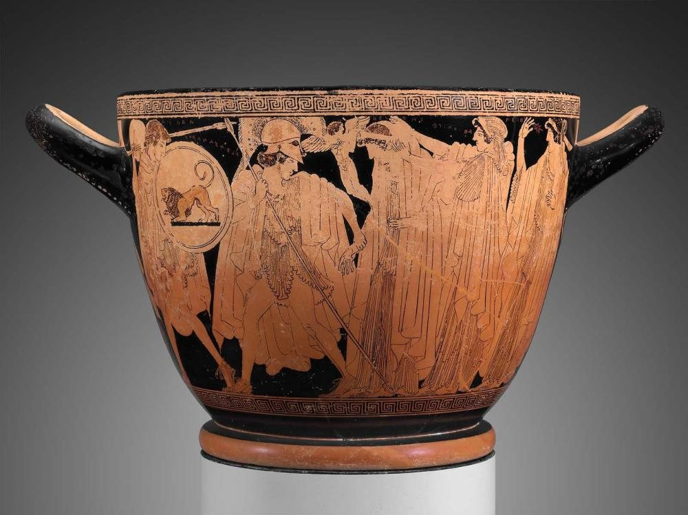
Aeneas has prized horses from the stock Zeus gave to Tros:
“The horses come from the stock that Zeus / Gave to Tros as payment for his son Ganymede. / The finest horses under the sun. Anchises / Stole some of the breed from Laomedon / by secretly putting his mares to them, / and so got six colts born in his own palace. / Four he kept for himself and reared at the stall, / and two he gave to Aeneas, superb warhorses.” (Homer, Iliad 5.281–289)
Aeneas sees Diomedes cutting down the Trojan ranks, so he finds Pandarus and urges him to fight back:
“Don’t talk like that. Things won’t get any better / Until you and I take a chariot / And face him in combat. Come on, get in mine, / And you’ll see what the horses of Tros can do.” (Homer, Iliad 5.237-239)
Even though Pandarus warns that Diomedes very likely has divine support, Aeneas offers his own chariot and horses so that they can face Diomedes together. When Diomedes kills Pandarus, Aeneas stands over his companion's body to keep the Greeks from taking it. In this scene he is likened to a “lion sure of its strength” (Homer, Iliad 5.323).
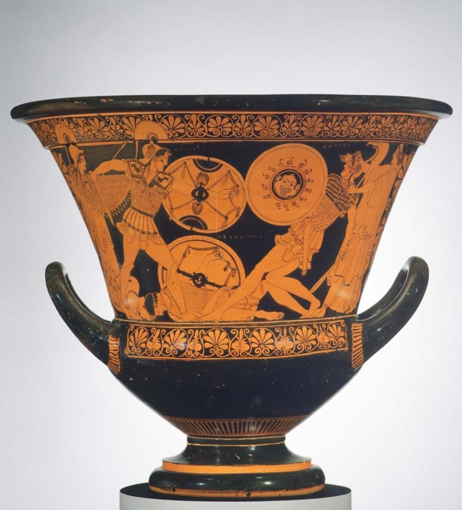
Left to fight Diomedes alone, Aeneas is overpowered when Diomedes strikes his hip with a huge rock that shatters the joint. The narrator says it “would have been the end of Aeneas” had his mother Aphrodite not stepped in (Homer, Iliad 5.337–343). She wraps him in her robe, but Diomedes goes after her and wounds the goddess's wrist. Apollo then carries Aeneas to his sanctuary in Pergamum, where Artemis and Leto heal him (Homer, Iliad 5.481–484).
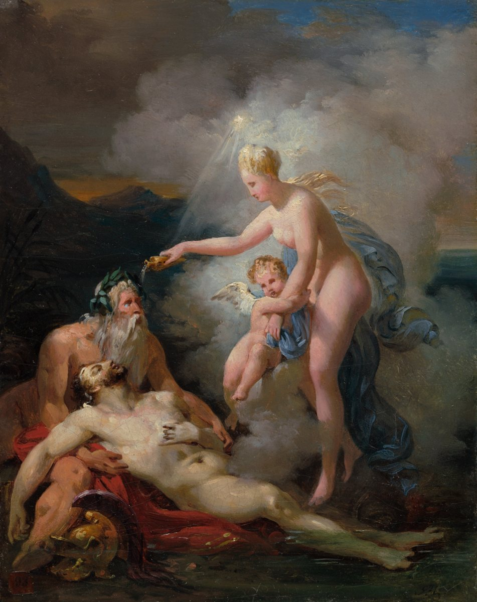
To Aeneas's credit, Apollo, disguised as a Thracian commander, describes him as a “man whom we honored as much as Hector” (Homer, Iliad 5.506). The Trojans' joy at his miraculous return shows his value among the Trojan ranks. He proves his skill by killing Crethon and Orsilochus, “two of Greece’s best” (Homer, Iliad 5.583), and Ares intends that Menelaus should “go down at Aeneas’ hands” (Homer, Iliad 5.608). Even though he has to be repeatedly rescued by gods Aeneas is a serious threat to the Greeks.
Homeric similes
The killing of Crethon and Orsilochus, the sons of Diocles, comes with a Homeric simile:
“Two cubs a mother lion has reared in the mountains / Where the woods are thick, will begin snatching / Cattle and sheep from human settlements / And continue ravaging the flock for years / Until humans finally hunt them down.” (Homer, Iliad 5.596–600)
The brothers have been cutting down Trojan fighters like cubs ravaging livestock, and Aeneas is the hunter who ends their spree. The simile extends the earlier lion image: Aeneas now becomes the hunter who can overcome lions.
“Opposite them, Aeneas called to his comrades, / To Deïphobus and Paris and Agenor, / His peers in the Trojan command. / Their troops flocked behind them, / Sheep following rams from pasture / To water, the shepherd’s joy, / Aeneas that glad when he saw / A nation of soldiers at his back.” (Homer, Iliad 13.510–517)
This pastoral simile shows another side of his heroism. He resembles a fierce lion when defending Pandarus's body, but here the soldiers follow him and the other commanders like “sheep following rams from pasture / To water.” His pleasure in leading is like “the shepherd’s joy” when he sees his men rallying behind him. Aeneas draws his strength both from individual acts of courage and from his bond with the men he leads.
In Book 17, Aeneas again rallies the Trojans, though Apollo spurs him first. Disguised as Periphas, a herald of Anchises, Apollo scolds Aeneas for playing it safe when Zeus supports the Trojans (Homer, Iliad 17.324–341). Aeneas recognizes the god and immediately calls to Hector and the other leaders:
“Hector, Trojan leaders, and allied commanders! / Shame on us all if we are beaten back to Ilion / By the Achaeans without defending ourselves. / One of the gods has just whispered in my ear / That Zeus on high is on our side in this fight. / Let’s go straight at the Danaans! Don’t let them take / Dead Patroclus to their ships at their leisure!” (Homer, Iliad 17.342–348)
He then heads to the front to lead his men. At the end of Book 17 he fights beside Hector against the two Ajaxes, and the Greeks flee before them like starlings or jackdaws before “a falcon, which brings death to smaller birds” (Homer, Iliad 17.773). Pairing Aeneas with Hector presents him as a leading Trojan warrior:
“But the Trojans kept coming, / And two among them especially, / Aeneas, Anchises’ son, and glorious Hector. / A cloud of starlings or jackdaws will loop around / Shrieking doom when they see ahead of them / A falcon, which brings death to smaller birds. / So too before Aeneas and Hector the Greeks / Ran shrieking, as if it were the end of the world. / The trench was littered with their beautiful, / Discarded weapons. But there was no armistice.” (Homer, Iliad 17.769–778)
Book 20: Aeneas against Achilles
Apollo disguises himself as Lycaon and urges Aeneas to challenge Achilles. Aeneas hesitates since he knows Achilles’s strength, but he points out that divine assistance is also at play:
“There’s no way for a man to fight Achilles. / Some god is always there to protect him. / Not that his spear doesn’t fly straight by itself / Or doesn’t stop until it draws blood. But if a god / Were to level the playing field, he wouldn’t beat me / Easily…” (Homer, Iliad 20.92–107)
Aeneas is clearly confident in his abilities and he reveres the gods in such a way that complements his piety. The narrator doesn’t explicitly indicate that Aeneas recognizes Apollo this time, either, so Aeneas’s hesitation to follow orders of the god isn’t a deliberate challenge to Apollo’s authority.
Apollo continues to encourage Aeneas by reminding him that Aphrodite is his mother and telling him to not retreat even though Achilles is spurring him with threats (Homer, Iliad 20.109–114). Interestingly enough, it is actually Poseidon who ends up intervening to prevent Aeneas’s death against Achilles during their duel. Poseidon describes Aeneas as a man who has always “pleased the gods in heaven with his offerings,” which is further proof of Aeneas’s pious character in Homeric tradition (Homer, Iliad 20.303–314).
Lastly, Poseidon declares Aeneas’s destiny:
“It is destined that Aeneas escape / And the line of Dardanus not be destroyed… And now Aeneas will rule the Trojans with might, / And the sons born to his sons in the future.” (Homer, Iliad 20.303–314)
Even though Homer doesn't specifically name the Romans as the future of Aeneas's people, this prophecy is the basis for Virgil's later portrayal of Aeneas in the Aeneid.
Aeneas in the Rhesus
Aeneas's portrayal in Rhesus (4th century BC, attributed to Euripides) suggests that his character could be shaped by his importance to a particular audience. As Liapis observes, Aeneas appears as an unusually faultless figure who gives sound military advice, in contrast with Hector's excitement and rashness. This flattering picture omits the tension between Aeneas and the house of Priam seen in the Iliad book 13. Liapis proposes that the role may honor a figure some Macedonian communities regarded as an ancestor or founder (Liapis, A Commentary on the Rhesus Attributed to Euripides).
The Fall of Troy
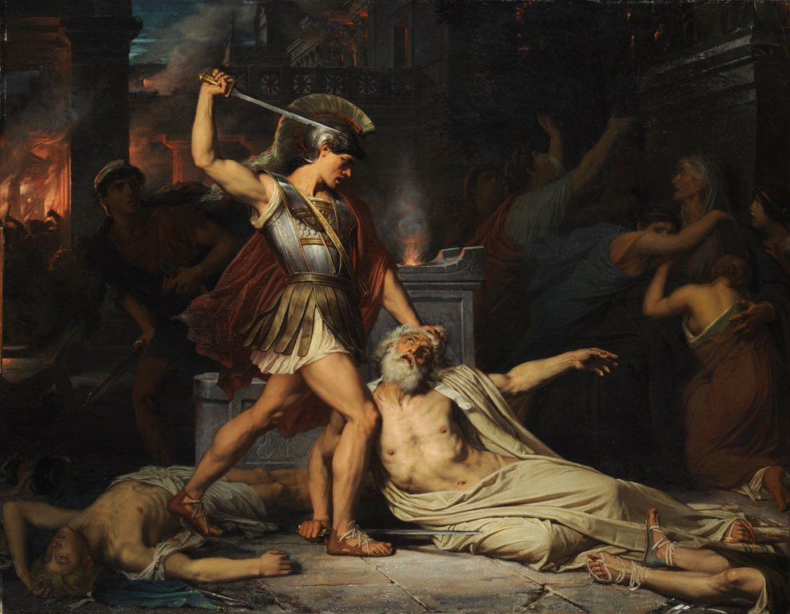
In Aeneid book 2, Aeneas tells Dido how Troy fell. Hector's ghost appears to him in a dream and orders him to flee:
“Escape, son of the goddess, tear yourself from the flames! The enemy holds our walls. Troy is toppling from her heights. You’ve paid your debt to our king and native land. If one strong arm could have saved Troy, my arm would have saved the city. Now, into your hands, she entrusts her holy things, her household gods. Take them with you as comrades in your fortunes. Seek a city for them once you have roamed the seas, erect great walls at last to house the gods of Troy!” (Virgil, Aeneid 2.362–372)
Aeneas fights regardless, and rallies his men to a last stand:
“Men, brave hearts, though bravery cannot save us, if you’re bent on following me and risking all to face the worst, look around you, see how our chances stand. The gods who shored our empire have left us, all have deserted their altars in their shrines. You race to defend a city already lost in flames. But let us die, go plunging into the thick of battle. One hope saves the defeated: they know they can’t be saved!” (Virgil, Aeneid 2.434–445)
“And not only Trojans paid the price in blood—at times the courage races back in their conquered hearts and they cut their enemies down in all their triumph. Everywhere, wrenching grief, everywhere, terror and a thousand shapes of death.” (Virgil, Aeneid 2.458–462)
The Aeneid shows the war as a shared tragedy. The Iliad has moments like this, but Virgil spends several passages on this imagery.
Priam is killed by Pyrrhus (Neoptolemus), the son of Achilles. After reading this, we think this is the exact moment when Aeneas decides to flee Troy:
“Then, for the first time the full horror came to me at last. I froze. The thought of my own dear father filled my mind when I saw the old king gasping out his life with that raw wound—both men were the same age—and the thought of my Creusa, alone, abandoned, our house plundered, our little Iulus’ fate. I look back—what forces still stood by me? None. Totally spent in war, they all deserted, down from the roofs they’d flung themselves to earth or hurled their broken bodies in the flames.” (Virgil, Aeneid 2.693–702)
Priam's murder in front of Aeneas forces him to reckon with what he wants for his family and for his own future.
The flight from Troy
At first, Anchises refuses to leave Troy behind because he feels old and doesn’t want to face the hardships of leaving his home. He only relents to Aeneas and Creusa’s pleas after receiving an omen from Zeus of a harmless flame on Ascanius’s head as a shooting star falls toward Mount Ida (Virgil, Aeneid 2.840–875). Aeneas then carries Anchises on his shoulders while he holds the household gods, little Ascanius is led by Aeneas and Creusa follows behind (Virgil, Aeneid 2.876–884). In the commotion Creusa ends up being lost; when Aeneas runs back to find her, Creusa’s ghost tells him to go on to a new kingdom in the Hesperian lands (Virgil, Aeneid 2.958–979). This episode shows the famous representation of Aeneas carrying his father Anchises on his back to leave Troy.
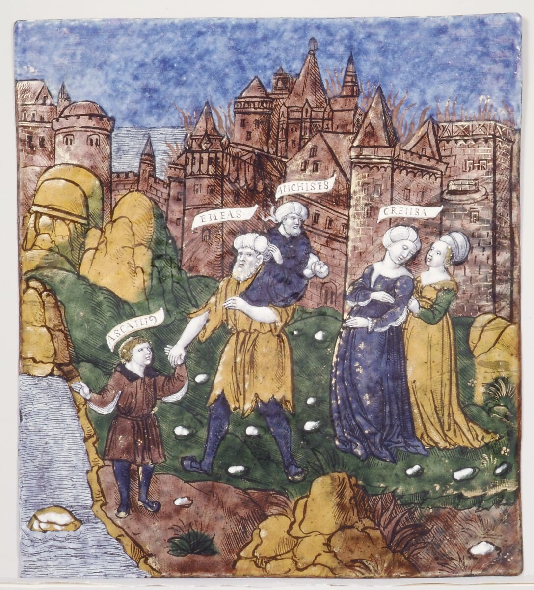
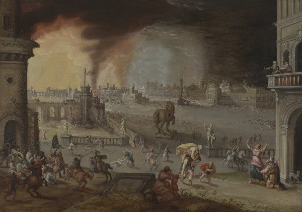
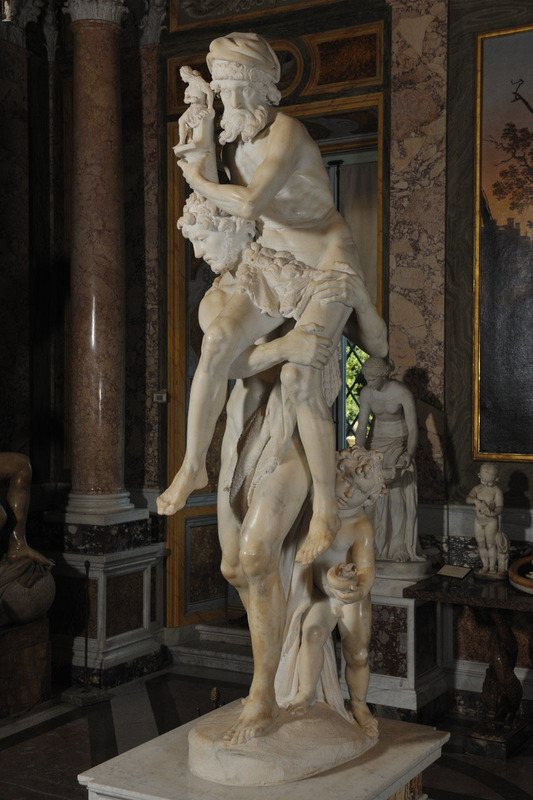
After the Trojan War
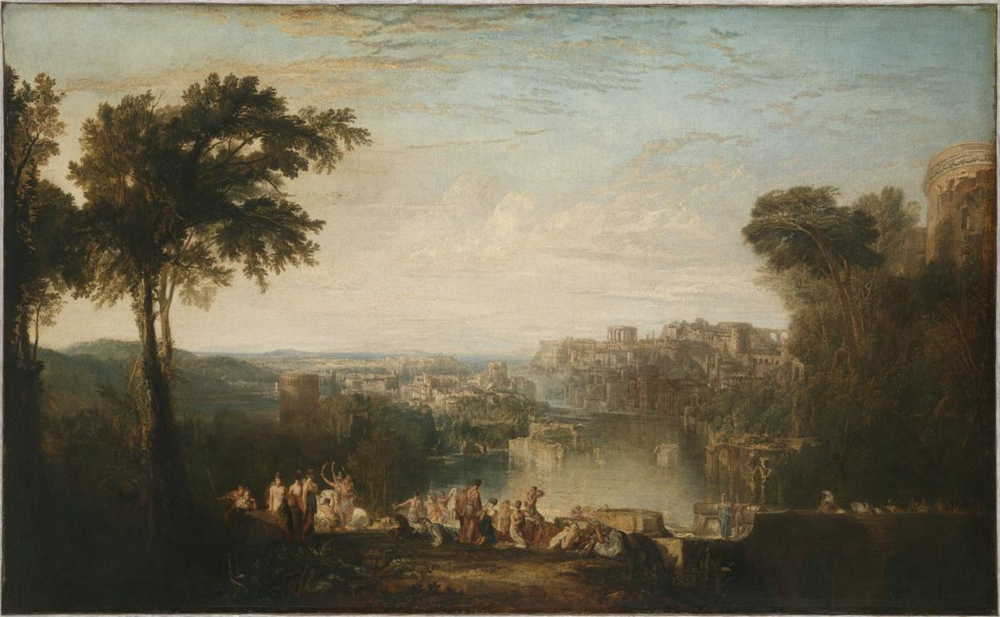
Virgil's Aeneid tells this part of the story. It opens:
“Wars and a man I sing—an exile driven on by Fate, he was the first to flee the coast of Troy, destined to reach Lavinian shores and Italian soil, yet many blows he took on land and sea from the gods above—thanks to cruel Juno’s relentless rage—and many losses he bore in battle too, before he could found a city, bring his gods to Latium, source of the Latin race, the Alban lords and the high walls of Rome.” (Virgil, Aeneid I.1–7)
The opening is in clear Homeric epic fashion. It also establishes a key Roman ideal of everyday religion: the household gods, the penates and lares.
“Why did she force a man, so famous for his devotion, to brave such rounds of hardship, bear such trials? Can such rage inflame the immortals’ hearts?” (Virgil, Aeneid 1.11–13)
During the storm in Aeneid book 1, he wishes he had died at Troy among the warriors who fell there. He longs for more than an honorable death and actually imagines dying near his family and alongside his community, a clear example of the pietas he is known for.
Aeneas leads the survivors across the Mediterranean to get to Italy. In the Aeneid he is first shipwrecked at Carthage and falls in love with queen Dido (Books 1–4). He recounts his journey which includes how his father died from old-age and exhaustion and how he visited him in the underworld (Books 3 and 6). Once Aeneas leaves Carthage and settles into the new land, he fights a war in Latium over the rightful claim to marrying Lavinia, daughter of King Latinus who previously ruled the land (Books 7–12). Aeneas’s main foe is Turnus, the suitor who would be first in line to the throne of Latium by marriage to Lavinia. The Aeneid ends with Aeneas killing Turnus.
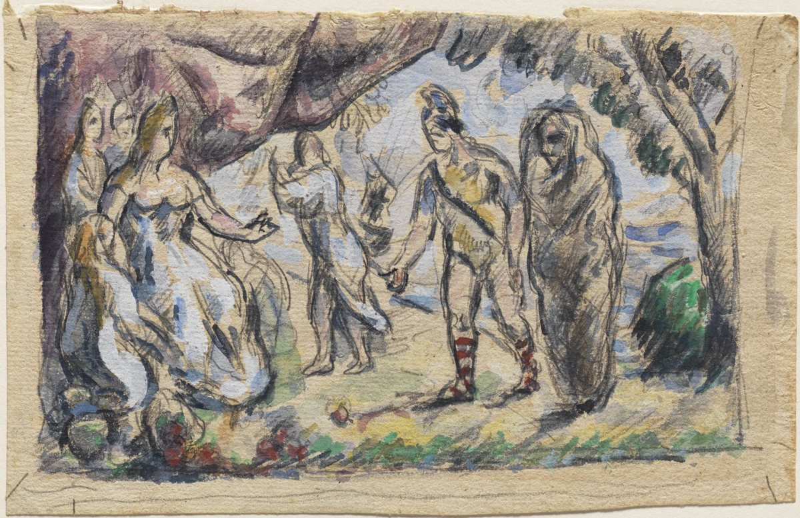
He insists he would rather have rebuilt Troy:
“If the fates had left me free to live my life, to arrange my own affairs of my own free will, Troy is the city, first of all, that I’d safeguard, Troy and all that’s left of my people whom I cherish. The grand palace of Priam would stand once more, with my own hands I would fortify a second Troy to house my Trojans in defeat.” (Virgil, Aeneid 4.424–430)
Here Aeneas believes he is a victim of fate. If he had free will, he would be back defending Troy, even if it fell again. Instead the gods toss him about like a plaything, so he cannot follow his heart, as he might by disobeying them and staying with Dido in Carthage.
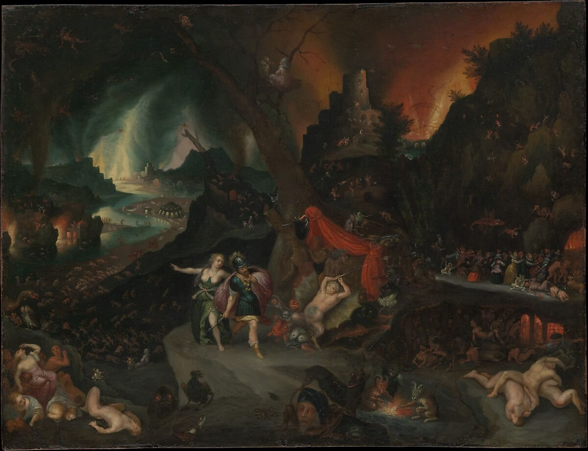
Aeneas and the Sibyl in the Underworld shows the descent in Aeneid 6, painted in a Bosch-like style that pictures the underworld through a traditional Flemish lens. Aeneas visits his father Anchises in the underworld to seek guidance for the wars ahead. The Sibyl of Cumae, a prophetess of Apollo, guides him. They enter through a cave near Lake Avernus, and Aeneas must pluck the sacred golden bough as an offering to Proserpina (Persephone), queen of the underworld. The river in the painting is likely the Acheron.
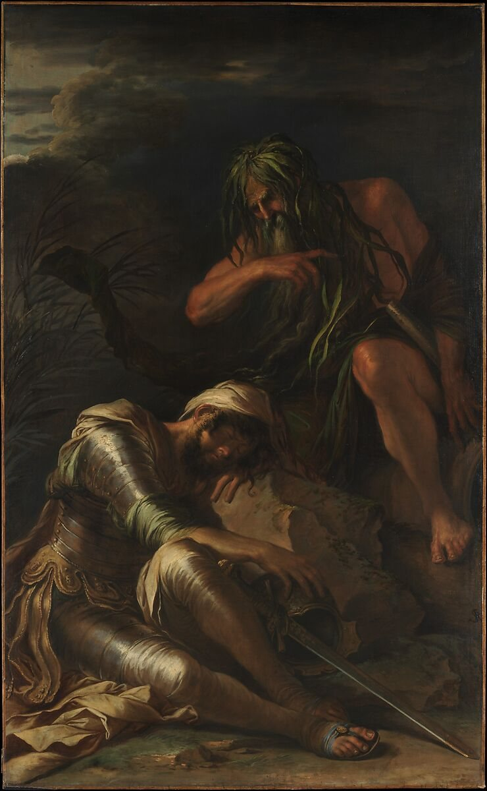
On reaching Italy, The Dream of Aeneas shows Aeneas sleeping beside the Tiber River, a scene from the Aeneid.
Founding Lavinium and his end
According to Livy, Aeneas lands in Latium, makes an alliance with King Latinus, marries his daughter Lavinia, and founds a town named Lavinium after her (Livy, History of Rome 1.1). Like in the Aeneid, Aeneas battles with Turnus and the Rutulians, but ends up disappearing in a fight by the river Numicus and is eventually worshipped as “Jupiter Indiges” (Livy, History of Rome 1.2). His son Ascanius later founded Alba Longa, whose kings lead down to Romulus and Remus (Livy, History of Rome 1.3).
In Dictys of Crete’s account, Aeneas never even reaches Italy. He is driven out of Troy by Antenor and sails to the Adriatic sea and finds a city called Corcyra Melaena (Dictys, Journal of the Trojan War 5.17).
Controversy: why did Aeneas leave Troy?
In our opinion, it seems dishonorable for a warrior and a member of the royal family to leave his country while it burned to the ground. Yet, Aeneas survives the fall of Troy, while Priam's entire house is wiped out. We believe that the explanation for why Aeneas leaves Troy reveals a lot about the authors and intended audiences in the Greco-Roman world.
Greek side: the gods let Aeneas live
In the Iliad, which shows more of the Greek perspectives, Aeneas's survival is dictated by the gods while his own will is ignored. The readers are reminded that Aeneas belongs to a different branch of the royal family than Priam in one instance in book 20, where Achilles taunts Aeneas for hoping to win Priam's throne (Homer, Iliad 20.189). Achilles nearly kills Aeneas, but Poseidon ends up intervening to save his life, even though Poseidon is on the Greek side.
Poseidon decides that Aeneas should live as he is guiltless, a man who always gives the gods good offerings (Homer, Iliad 20.301–304). It is also that Zeus loved Dardanus, Aeneas's ancestor, and does not want Dardanus's line to perish (Iliad 20.306–310), while he has come to hate Priam's line (Homer, Iliad 20.312–313). This destiny was announced even before Aeneas was born. In the Homeric Hymn to Aphrodite, the goddess tells Anchises that he will have a son who will rule among the Trojans as will his family line (Shelmerdine, Homeric Hymns). In our opinion, then, it seems that from the Greek perspective, Aeneas survives due to fate instead of his well-timed flight.
Roman side: Aeneas leaves only on the gods’ orders
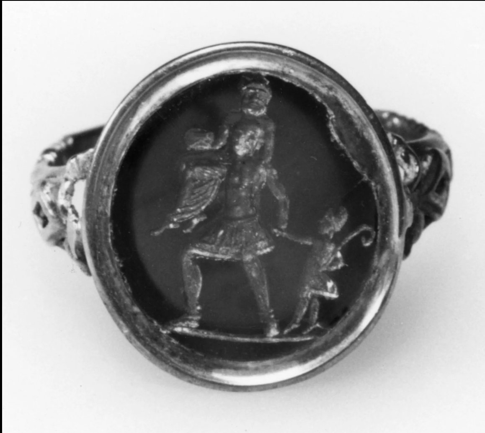
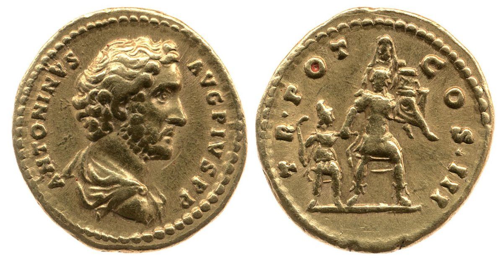
Virgil faced a harder problem because he had to craft Aeneas into Rome's founding hero and the claimed ancestor of Julius Caesar's family. The founding ancestor being a prince who ran away from his country is not the ideal representation for Rome. In our opinion, it would be counterintuitive to represent a "hero" as someone who deserts a problem rather than facing it head-on. Aeneid book 2 puts our concerns to rest since Aeneas expresses how he wants to fight to the death for the sake of Troy (Virgil, Aeneid 2). He swears that he dodged no danger, and that he left only because it was the gods' will (Virgil, Aeneid 2.264–400). Even then, he doesn't go until a clear omen from Jupiter wins his father's consent (Aeneid 2.660–880). When he finally leaves, he carries his father and the household gods with him, so his departure becomes an act of duty to his family and to the gods instead of being a wimpy escape.
Roman objects frequently reflect this act of duty. On rings and coins, Aeneas is depicted as a man carrying his father and the household gods, the public picture of pietas.
The Differing Opinions
Dictys is an interesting perspective because Aeneas still embodies the pious role, refusing to fight over an offense against Apollo, yet that same piety makes him less of a traditional warrior and leads him to abandon Priam and ultimately betray his country. The Homeric accounts certainly gives Aeneas a degree of respect (even though he is an enemy) as recognition of the gods' favoritism for him, his divine ancestry, and fate. The Aeneid, on the other hand, has to give respectable answers to why Aeneas survived, and orients Aeneas into his persona of piety.
In contemporary politics and popular culture
A lot of Western culture is rooted from Greek/Roman mythology, and a lot of present-day issues and media draws from it. Aeneas is also a frequent subject.
Aeneas the refugee
On January 19, 2019, the rescue ship Sea-Watch 3 took on 47 migrants off Libya. Italy's “closed ports” policy left the ship waiting off Syracuse until an EU deal was reached on January, 29 (Gay, p. 124). The Italian news site Fanpage.it then published lines from Aeneid book 1 as “pro-migrant verses,” and the article circulated widely (Gay, p. 125). The far-right newspaper Il Primato Nazionale answered that Aeneas was not a pro-migrant hero (Gay, pp. 126–127).
Arguments that Aeneas was a refugee:
- Virgil calls him fato profugus, a refugee by fate (Virgil, Aeneid 1.2).
- The shipwrecked Trojans are at first denied a landing in Carthage, then taken in (Virgil, Aeneid 1.538–543).
- He travels from Troy to sanctuary in Carthage in North Africa and then settles in Italy (Gay, p. 126).
Arguments that he was not:
- Fate and the gods sent him, so he is technically not a refugee, whatever his circumstances (Gay, p. 127).
- Italy is the homeland of Aeneas's ancestor Dardanus. Therefore, Aeneas landing in Italy is an act of "coming home", rather than arriving as a foreigner (Gay, p. 127).
Even today, the way Aeneas left Troy and why remain a matter of debate that reaches into politics. Some argue that Rome's own founder was a shipwrecked refugee, so Italy should admit migrants; others argue that Aeneas came to Italy on heavenly orders and so is a different case. Gay concludes that the poem's ambiguity allows for both readings, and each side simply ignores the details used by the opposition (Gay, pp. 133-134). The question of why Aeneas left Troy is just as important to modern day politics as it was to Virgil and constructing a legitimate ancestry for Rome.
Troy (2004 film)
Aeneas is played by the British actor Frankie Fitzgerald. The film only briefly alludes to his role in the founding of Rome and does not make him a central figure: Paris has to ask Aeneas his name before handing him the “Sword of Troy” and telling him to find the survivors a new home. The film doesn't put weight on Anchises and the importance of family or other divine orders unlike in the Aeneid. Aeneas's central trait, pietas, is nowhere to be seen in the film because he leaves Troy based on military orders.
Recent Literature
Aeneas is mentioned briefly as the son of Aphrodite in the popular mythological retelling The Song of Achilles (Miller 2012, ch. 15).
He is also brought up in Rick Riordan's novel The Lost Hero, the first book in the Heroes of Olympus series:
"Aphrodite smiled... [and she said] Paris and Helen were a cute couple. And the heroes of that war are immortal now—at least in the memories of men. Love is powerful, Piper. It can bring even the gods to their knees. I told this to my son Aeneas when he escaped from Troy. He thought he had failed. He thought he was a loser! But he traveled to Italy—”
“And became the forebear of Rome.”
“Exactly. You see, Piper, my children can be quite powerful. You can be quite powerful, because my lineage is unique. I am closer to the beginning of creation than any other Olympian.” (Riordan, The Lost Hero 447)
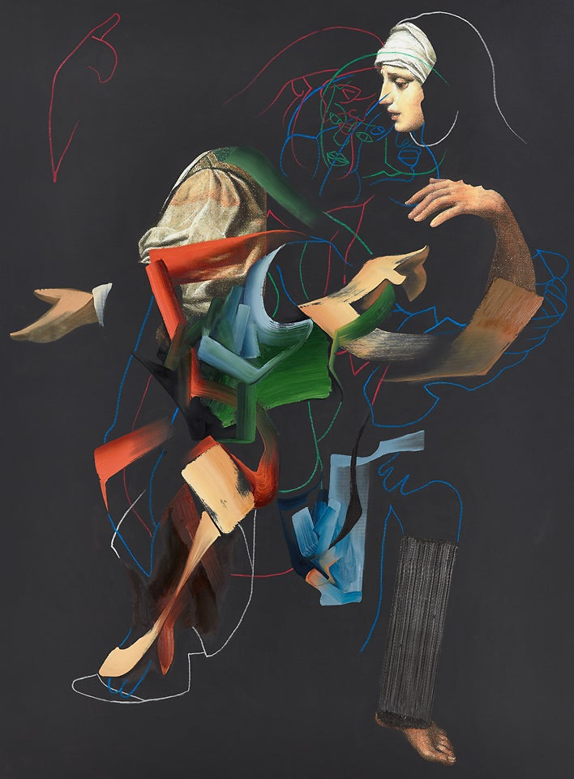
Modern Art
Pieter Schoolwerth reworked older paintings of Aeneas escaping Troy including Simone Vouet's Aeneas and His Family Fleeing Troy, held by the San Diego Museum of Art. Schoolwerth digitally selected and rearranged parts of the paintings before he printed the images onto canvas and added paint and pastel on top (Schoolwerth, After Troy).
Discussion
How Aeneas's appearance changes over time
Venus Healing Aeneas recalls how Aeneas was saved from Diomedes by his mother in the Iliad. Artistic depictions of Aeneas during the Iliad are hard to find. This raises the question of why Aeneas is depicted the way he is, and in which stories. How does this relate to his perception as a character and his larger role in the foundation of Rome?
The only references ancient vase painters had for Aeneas was from his actions in the Iliad. For instance, vase painters represented Aeneas on a krater through the episode where Diomedes wounds him and Aphrodite rescues him. Another example is on the skyphos, where Aeneas is with Paris and Helen with a lion's shield. After antiquity, though, artists in the Latin West primarily knew Aeneas through Virgil's Aeneid (possibly due to political reasons as well). Therefore, later art concentrates on scenes from the Aeneid, more specifically Aeneas's flight from Troy, as that represented one of the Roman virtues.
The fully armed, shield and spear-bearing Aeneas of the archaic Greek vases is changed to a man carrying his father, with the box of household gods backdropped with a burning city as we arrive to artists of the Renaissance and Baroque period. Fast forward to contemporary adaptations, Aeneas's image is even stripped of piety, as shown in the movie Troy, as he is now a man sent on military orders to continue the Trojan line, with less focus on the "virtues" as it is similar in contemporary culture.
It is very easy to distinguish the transition: from a god-loved warrior in the ancient Greek period to the literal embodiment of Roman virtues, to more focus on the image with his father in the Renaissance, and ending as a soldier dutifully following orders. The lack of description for Aeneas's appearance ironically allows him to be the perfect vessel to carry social ideas regardless of era.
References
Texts
Dares Phrygium, “The History of the Fall of Troy.” In: The Trojan War. The Chronicles of Dictys of Crete and Dares the Phrygian. Translated by R. M. Frazer (Jr.). Indiana University Press. 1966. Accessed from: Theoi Project Classical Texts Library: https://www.theoi.com/Text/DaresPhrygius.html
Dictys Cretensis, “Journal of the Trojan War.” In: The Trojan War. The Chronicles of Dictys of Crete and Dares the Phrygian. Translated by R. M. Frazer (Jr.). Indiana University Press. 1966. Accessed from: Theoi Project Classical Texts Library: https://www.theoi.com/Text/DictysCretensis1.html
Fantuzzi, Marco. The Rhesus Attributed to Euripides.Cambridge University Press, 2020.
Gay, Marco. “Fato Profugus. Aeneas the Refugee: An Italian Debate.” In Classical Controversies: Reception of Graeco-Roman Antiquity in the Twenty-First Century, edited by Kim Beerden and Timo Epping, 123–138. Sidestone Press, 2022.
Hesiod. Theogony and Works and Days. Translated by M.L. West. Oxford University Press, 1988.
Homer. Iliad [Ancient Greek text]. In: Homeri Opera in five volumes. Oxford University Press. Perseus Digital Library: www.perseus.tufts.edu/hopper/.https://www.perseus.tufts.edu/hopper/text?doc=urn:cts:greekLit:tlg0012.tlg001.perseus-grc1:1.1-1.32
Homer. Iliad. Translated by Stanley Lombardo. Hackett, 1997.
Liapis, Vayos. A Commentary on the Rhesus Attributed to Euripides. Oxford University Press, 2012.
Livy. History of Rome, Volume I: Books 1-2. Translated by B. O. Foster. Loeb Classical Library 114. Cambridge, MA: Harvard University Press, 1919.
Shelmerdine, Susan C. The Homeric Hymns. Focus Classical Library, 1995.
Troy. Directed by Wolfgang Petersen. Warner Bros., 2004.
Virgil. The Aeneid. Translated by Robert Fagles. Penguin Books, 2006.
Images
Aeneas carrying Anchises out of Troy. Attic black-figure oinochoe, 520–510 BC (Louvre F 118). https://commons.wikimedia.org/wiki/File:Aineias_Ankhises_Louvre_F118.jpg

Departure of Aeneas from Troy. Attic black-figure amphora, 520–500 BC. British Museum. https://www.britishmuseum.org/collection/object/G_1836-0224-137?selectedImageId=1613764875
Aeneas, with a lion shield, accompanying Paris and Helen. Red-figure skyphos signed by Makron, about 490 BC. MFA Boston. https://collections.mfa.org/objects/153876
Diomedes wounding Aeneas (Iliad 5). Red-figure calyx krater, Tyszkiewicz Painter, about 490–480 BC. MFA Boston. https://collections.mfa.org/objects/153649
Venus Healing Aeneas, Merry Joseph Blondel. 1820. The Art Institute of Chicago. https://www.artic.edu/artworks/226550/venus-healing-aeneas
Photo of a Peregrine Falcon Falco peregrinus hunting Common Starlings Sturnus vulgaris, Rome. Andrea Poggi. iNaturalist. October 17, 2022, https://commons.wikimedia.org/wiki/File:Peregrine_Falcon_hunting_Common_Starlings,_Rome_243839915.jpg

The Death of Priam. Jules Lefebvre, 1861. Beaux-arts de Paris. https://commons.wikimedia.org/wiki/File:Lefebvre_La_mort_de_Priam.JPG

Aeneas Fleeing Troy with Anchises, Creusa, and Ascanius (Aeneid, Book II). Master of the Aeneid, Limoges enamel, about 1530–35. Metropolitan Museum of Art. https://www.metmuseum.org/art/collection/search/199612
The Siege of Troy with Aeneas Fleeing While Carrying his Father, Anchises. Louis de Caullery, 1580–1621.Virginia Museum of Fine Arts. https://www.vmfa.museum/artworks/the-siege-of-troy-with-aeneas-fleeing-while-carrying-his-father-anchises-84514
Aeneas, Anchises, and Ascanius. Gian Lorenzo Bernini, marble, 1618–19. Galleria Borghese. https://www.collezionegalleriaborghese.it/en/opere/aeneas-anchises-and-ascanius
Dido and Aeneas. J. M. W. Turner, 1814. Tate, https://www.tate.org.uk/art/artworks/turner-dido-and-aeneas-n00494
Aeneas Meeting Dido at Carthage. Paul Cézanne, about 1875. Pearlman Collection: https://www.pearlmancollection.org/artwork/aeneas-meeting-dido-at-carthage/
Aeneas and the Sibyl in the Underworld. Jan Brueghel the Younger, 1630s. Metropolitan Museum of Art, https://www.metmuseum.org/art/collection/search/435813
Ghisi, Giorgio. The Fall of Troy and the Escape of Aeneas. 1545. National Gallery of Art. https://www.nga.gov/artworks/131489-fall-troy-and-escape-aeneas
Aeneas and His Family Fleeing Burning Troy, 1654, Henry Gibbs. Oil on Panel. The Tate Gallery: https://www.tate.org.uk/about-us/projects/tudor-stuart-technical-research/entries/aeneas-and-his-family-fleeing-burning-troy-1654-by-henry-gibbs
Aeneas Fleeing the Burning City of Troy. Louise De Caullery & David Teniers, 1580-1649, oil on panel. Galerie Claude Vittet., https://www.rafaelvalls.co.uk/artwork/aeneas-fleeing-the-burning-city-of-troy/
Death of Achilles, 1630/1635, Peter Paul Rubens. Oil on Panel. The Courtauld Collection, https://artuk.org/discover/artworks/death-of-achilles-207437
Aeneas carrying Anchises. Carnelian intaglio in a gold ring, 1st century BC–1st c. CE. Walters Art Museum. https://art.thewalters.org/object/42.1186/
Roman coin of Antoninus Pius, AD 140–143. On the reverse, Aeneas carrying Anchises. British Museum, https://www.britishmuseum.org/collection/object/C_1896-0608-26
After Troy 10. Pieter Schoolwerth, 2012. Miguel Abreu Collection, New York.https://miguelabreugallery.com/exhibitions/after-troy/
After Troy 7. Pieter Schoolwerth, 2012. Miguel Abreu Collection, New York. https://miguelabreugallery.com/exhibitions/after-troy/